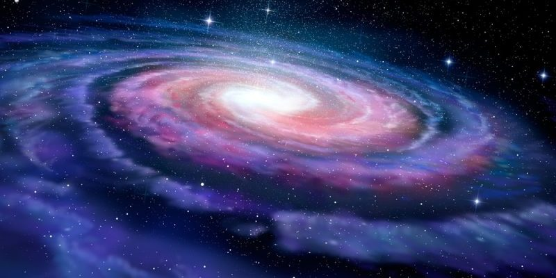

Introducción
La Vía Láctea es la galaxia en la que se encuentra nuestro sistema solar. Es un vasto conjunto de estrellas, planetas, gas y polvo que se extiende por miles de años luz en el espacio. En este artículo, exploraremos algunos de los aspectos más interesantes de nuestra galaxia.
Características de la Vía Láctea
La Vía Láctea es una galaxia espiral barrada, lo que significa que tiene un núcleo central en forma de barra y brazos espirales que se extienden hacia afuera. Contiene alrededor de 100 mil millones de estrellas y una gran cantidad de planetas, asteroides y otros objetos celestes.

Ubicación en el Universo
Nuestra galaxia se encuentra en el Grupo Local, un grupo de galaxias que incluye la Galaxia de Andrómeda y varias otras galaxias más pequeñas. La Vía Láctea y la Galaxia de Andrómeda son dos de las galaxias más grandes del Grupo Local y están en curso de colisión en un futuro lejano.
Exploración y Estudio
Los astrónomos han estado estudiando la Vía Láctea durante siglos. La tecnología moderna, como telescopios espaciales y observatorios avanzados, ha permitido una comprensión más profunda de nuestra galaxia. A través de la observación de estrellas, cúmulos estelares y la radiación cósmica de fondo, hemos aprendido mucho sobre su estructura y evolución.